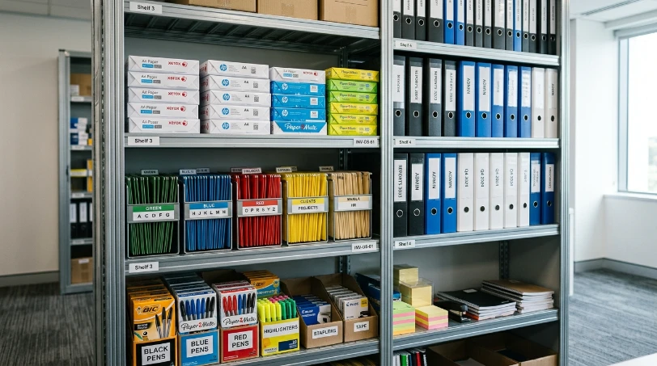

Menghitung kebutuhan ATK kantor secara akurat memerlukan formula sederhana: jumlah karyawan dikalikan rata-rata pemakaian per orang per bulan, ditambah buffer stok 10–20 persen. Formula ini membantu divisi operasional menyusun estimasi kebutuhan ATK bulanan tanpa harus menebak-nebak jumlah pemesanan setiap periode.
Apa Itu Estimasi Kebutuhan ATK Kantor?
Estimasi kebutuhan ATK kantor adalah proses menghitung jumlah alat tulis dan perlengkapan kantor yang dibutuhkan dalam periode tertentu, biasanya bulanan, berdasarkan jumlah karyawan dan pola konsumsi masing-masing divisi.
Tanpa estimasi yang jelas, tim purchasing sering kali memesan ATK secara reaktif hanya ketika stok benar-benar habis. Cara ini memicu pembelian dadakan dengan harga eceran tinggi dan biaya kirim berulang yang menguras kas operasional. Untuk menghindari jebakan pemborosan semacam ini, Anda dapat meninjau panduan kami mengenai 10 kesalahan fatal dalam pengadaan ATK kantor.
Bagaimana Rumus Dasar Menghitung Kebutuhan ATK Bulanan?
Rumus dasar menghitung kebutuhan ATK bulanan adalah mengalikan jumlah karyawan dengan rata-rata pemakaian per orang, kemudian menambahkan buffer stok untuk mengantisipasi kebutuhan yang tidak terduga.
Formula Excel Sederhana untuk Estimasi ATK
Di dalam aplikasi Microsoft Excel atau Google Sheets, formula yang dapat digunakan adalah:
=Jumlah_Karyawan * Rata_Rata_Pemakaian * (1 + Persentase_Buffer)
Setiap variabel dimasukkan ke sel terpisah sehingga perhitungan dapat diperbarui otomatis setiap kali jumlah karyawan atau pola pemakaian divisi berubah.
| Variabel | Contoh Nilai | Keterangan |
|---|---|---|
| Jumlah Karyawan | 50 orang | Diambil dari data HR terbaru per divisi kerja |
| Rata-rata Pemakaian per Orang | Sesuai kategori ATK | Berdasarkan data historis pemakaian 3 bulan terakhir |
| Buffer Stok | 10–20 persen | Mengantisipasi kebutuhan mendadak dan keterlambatan pengiriman |

Variabel yang Perlu Dimasukkan dalam Perhitungan
Selain jumlah karyawan, variabel lain yang perlu dimasukkan adalah jenis ATK yang dihitung terpisah, karena pola pemakaian kertas, tinta, dan alat tulis biasanya berbeda satu sama lain.
Sebagai contoh, divisi legal dan keuangan biasanya mengonsumsi kertas HVS dan map ordner dua kali lipat lebih banyak dibandingkan divisi IT atau desain grafis. Memasukkan data historis dari pembelian bulan-bulan sebelumnya sangat membantu menyempurnakan estimasi anggaran ke depannya.
Apa Saja Faktor yang Memengaruhi Kebutuhan ATK Kantor?
Kebutuhan ATK kantor dipengaruhi oleh jumlah karyawan aktif, intensitas kegiatan administratif seperti pencetakan dokumen kontrak, serta musim tertentu seperti periode laporan tahunan (audit) atau penerimaan karyawan baru yang biasanya meningkatkan konsumsi kertas dan tinta printer.
Selain itu, kebijakan kerja seperti work from office penuh atau hybrid juga dapat memengaruhi volume pemakaian ATK, sehingga perhitungan sebaiknya ditinjau ulang secara berkala mengikuti perubahan pola kerja perusahaan.
Bagaimana Menghindari Kekurangan atau Kelebihan Stok ATK?
Kekurangan atau kelebihan stok ATK dapat dihindari dengan menetapkan buffer stok yang wajar, memantau realisasi pemakaian dibanding estimasi setiap bulan, dan menyesuaikan formula perhitungan berdasarkan data terbaru.
Pemantauan stok secara berkala melalui metode Stock Opname bulanan memungkinkan tim purchasing mendeteksi pola pemakaian yang menyimpang dari estimasi awal, sehingga jumlah pemesanan berikutnya dapat disesuaikan lebih akurat tanpa memicu overstock barang yang kedaluwarsa atau rusak.
Mengapa Perlu Bekerja Sama dengan Supplier ATK yang Fleksibel?
Bekerja sama dengan supplier yang fleksibel memudahkan penyesuaian jumlah pesanan ketika hasil estimasi bulanan berubah, tanpa terikat kontrak kaku yang menyulitkan proses adaptasi kebutuhan operasional. Sebelum menunjuk rekanan suplai jangka panjang, pastikan Anda memeriksa kriteria verifikasi pada panduan memilih supplier ATK Jakarta terpercaya.
MAROON ATK berpengalaman menyuplai kebutuhan ATK dan furniture ke lebih dari 150 instansi pemerintah dan perusahaan swasta di Jabodetabek dengan keakuratan pengiriman barang mencapai 99,8 persen (data internal Maroon ATK, 2026), sehingga perusahaan dapat menyesuaikan volume pesanan sesuai hasil estimasi tanpa khawatir keterlambatan pengiriman.
Kesimpulan
- Formula dasar: Terapkan rumus perkalian jumlah karyawan × rata-rata konsumsi per orang + buffer stok 10–20% sebagai acuan belanja bulanan.
- Kategorisasi spesifik: Kelompokkan ATK berdasarkan fast-moving (kertas, tinta) dan slow-moving (stapler, perforator) agar budgeting lebih akurat.
- Audit berkala: Selaraskan data Excel dengan stok fisik gudang melalui audit stok opname rutin setiap akhir bulan.
- Fleksibilitas vendor: Pilih supplier B2B yang siap menyesuaikan fluktuasi pesanan tanpa penalti kontrak yang memberatkan.
- Konsultasi gratis: Minta template Excel siap pakai dan konsultasi estimasi kebutuhan ATK kantor Anda via WhatsApp resmi Maroon ATK.
Pertanyaan yang Sering Diajukan (FAQ)
Estimasi kebutuhan ATK kantor adalah perhitungan jumlah alat tulis dan perlengkapan kantor yang dibutuhkan dalam periode tertentu berdasarkan jumlah karyawan, pola pemakaian, dan buffer stok.
Rumus dasarnya adalah jumlah karyawan dikalikan rata-rata pemakaian per orang per bulan, ditambah buffer stok untuk mengantisipasi kebutuhan mendadak.
Template dasar dapat digunakan berbagai jenis perusahaan, namun variabel seperti jenis ATK dan volume pemakaian sebaiknya disesuaikan dengan karakteristik masing-masing divisi.
Gunakan buffer stok sekitar 10-20 persen dari estimasi kebutuhan bulanan dan lakukan pemantauan stok secara berkala agar pemesanan ulang dapat dilakukan tepat waktu.
Maroon ATK menyediakan konsultasi dan template estimasi kebutuhan ATK secara gratis bagi klien yang menghubungi tim melalui WhatsApp resmi MAROON ATK di 0889-8964-3555.